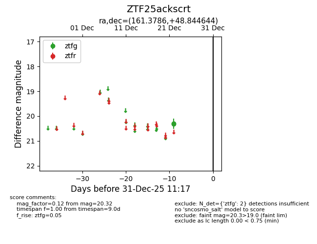
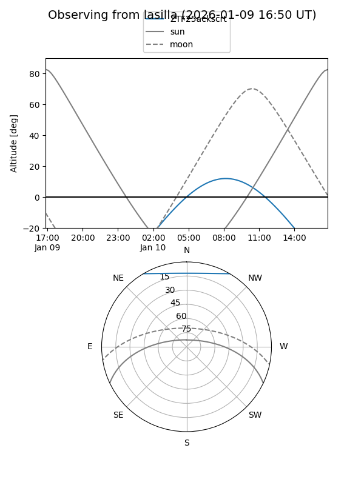
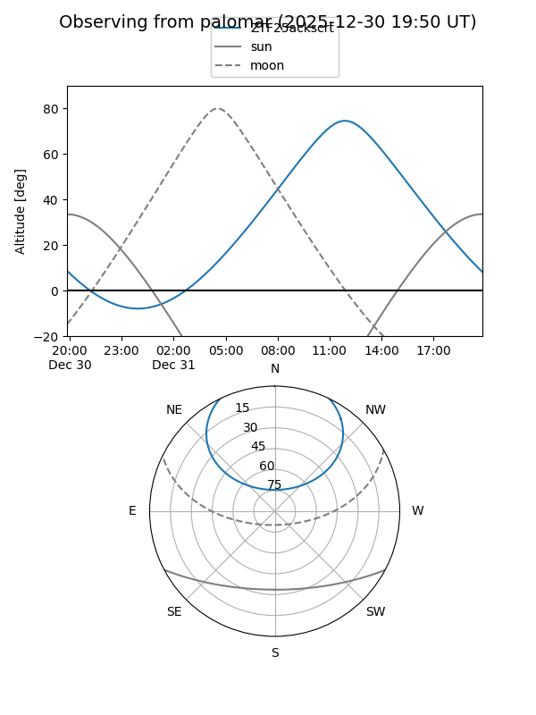

ZTF25ackscrt
Target ZTF25ackscrt at 2026-01-09 12:49
Aliases and brokers:
FINK: link
Lasair: link
ALeRCE: link
alt names
ZTF25ackscrt (ztf,fink_ztf)
Coordinates:
equatorial (ra, dec) = 161.3786,+48.84464
equatorial (HMS+DMS) = 10:45:30.86,+48:50:40.72
galactic (l, b) = (162.6165,+57.43906)
Flags:
Photometry:
last ztfg=20.32
2 ztfg detections
Lightcurve

Visibility


Additional plots